신규 캐릭터 380종
기존 321개 ID 보존 · 스테이지별 19종 추가 · 생성 모델의 실제 렌더링
스테이지 1
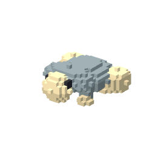
물웅덩이 개구리01-N01 · ID 321 · C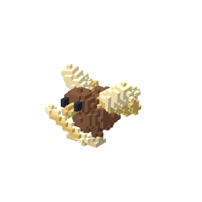
풀씨참새01-N02 · ID 322 · C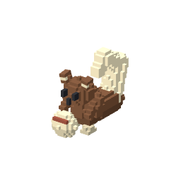
밤톨다람쥐01-N03 · ID 323 · C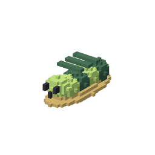
완두콩 애벌레01-N04 · ID 324 · C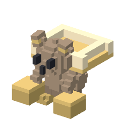
둥지두더지01-N05 · ID 325 · C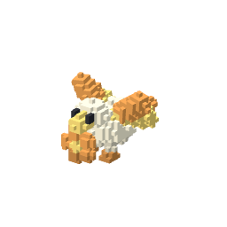
데이지 오리01-N06 · ID 326 · B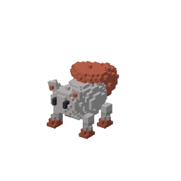
버섯너구리01-N07 · ID 327 · B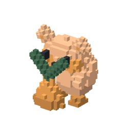
당근햄스터01-N08 · ID 328 · B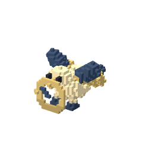
풍향계 제비01-N09 · ID 329 · B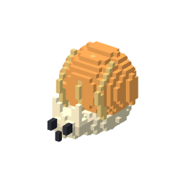
호박달팽이01-N10 · ID 330 · B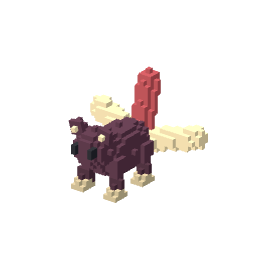
양귀비 여우01-N11 · ID 331 · A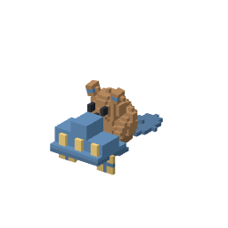
수레비버01-N12 · ID 332 · A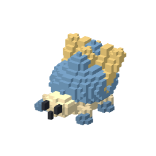
빗방울 고슴도치01-N13 · ID 333 · A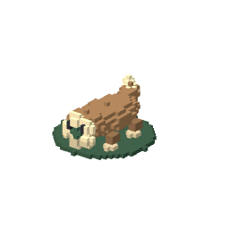
수련수달01-N14 · ID 334 · S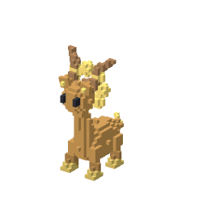
해바라기 기린01-N15 · ID 335 · S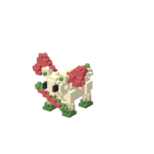
풀피리 염소01-N16 · ID 336 · S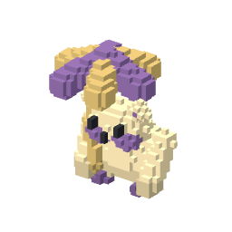
꽃우산 판다01-N17 · ID 337 · SS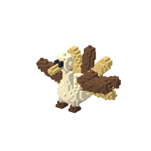
밀빛 두루미01-N18 · ID 338 · SS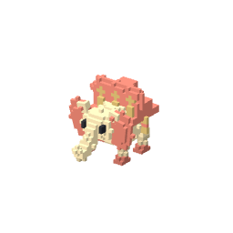
꽃마차 코끼리01-N19 · ID 339 · SSS스테이지 2
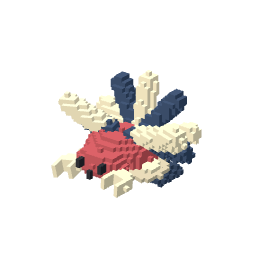
딱지게02-N01 · ID 340 · C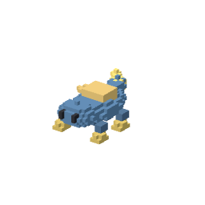
퍼즐도마뱀02-N02 · ID 341 · C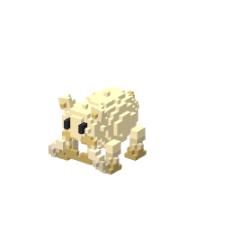
실타래 고양이02-N03 · ID 342 · C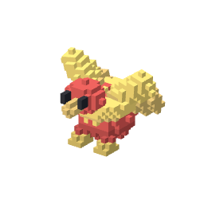
팽이병아리02-N04 · ID 343 · C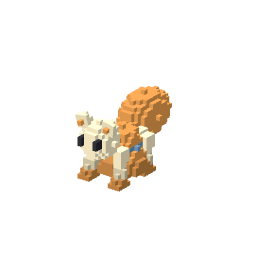
종이컵 여우02-N05 · ID 344 · C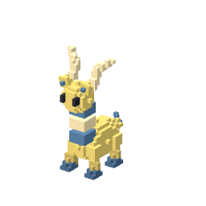
자석블록 기린02-N06 · ID 345 · B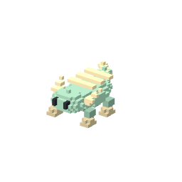
스티커 도롱뇽02-N07 · ID 346 · B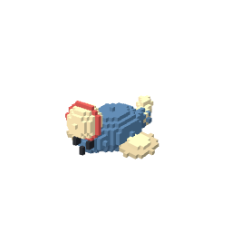
고무공 물개02-N08 · ID 347 · B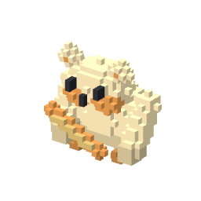
크레용 판다02-N09 · ID 348 · B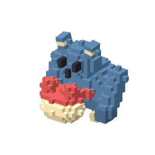
북치는 고릴라02-N10 · ID 349 · B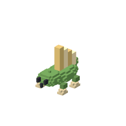
돛단배 악어02-N11 · ID 350 · A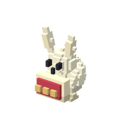
카드병정 토끼02-N12 · ID 351 · A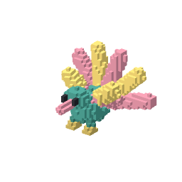
만화경 앵무새02-N13 · ID 352 · A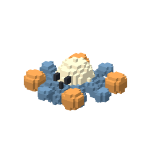
구슬팔 문어02-N14 · ID 353 · S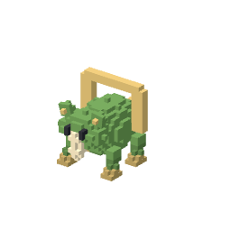
인형극 카멜레온02-N15 · ID 354 · S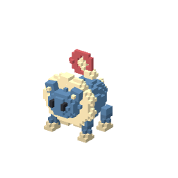
행진사자02-N16 · ID 355 · S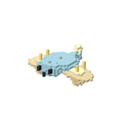
모빌가오리02-N17 · ID 356 · SS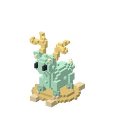
회전목마 사슴02-N18 · ID 357 · SS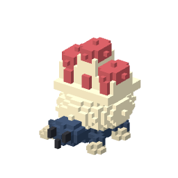
성채거북02-N19 · ID 358 · SSS스테이지 3
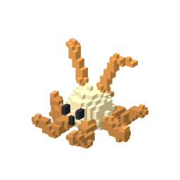
줄무늬 말미잘03-N01 · ID 359 · C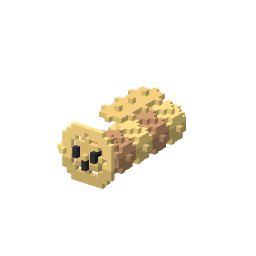
동전해삼03-N02 · ID 360 · C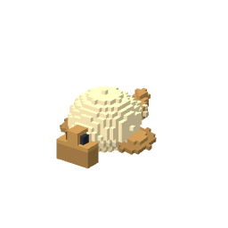
모래복어03-N03 · ID 361 · C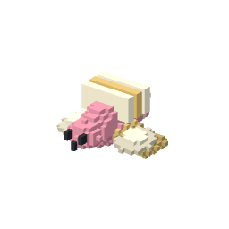
조개새우03-N04 · ID 362 · C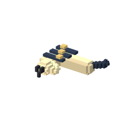
바둑무늬 바다뱀03-N05 · ID 363 · C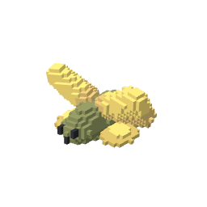
해초실고기03-N06 · ID 364 · B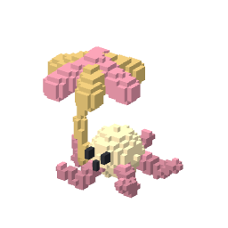
우산성게03-N07 · ID 365 · B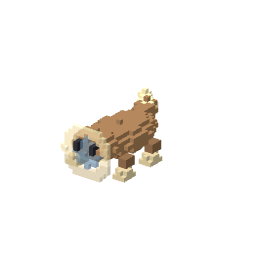
거품해달03-N08 · ID 366 · B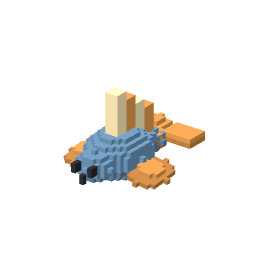
돛지느러미 물고기03-N09 · ID 367 · B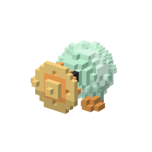
유리멍게03-N10 · ID 368 · B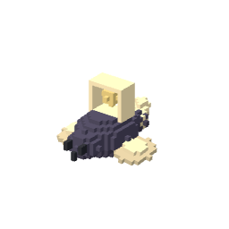
등불아귀03-N11 · ID 369 · A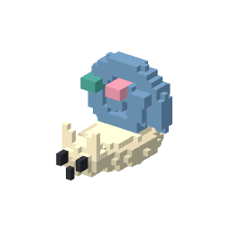
자개앵무조개03-N12 · ID 370 · A해먹불가사리03-N13 · ID 371 · A산호왕관 바닷가재03-N14 · ID 372 · S청자 바다코끼리03-N15 · ID 373 · S소용돌이 장어03-N16 · ID 374 · S진주등 고래03-N17 · ID 375 · SS해저궁 투구게03-N18 · ID 376 · SS심해수호 상어03-N19 · ID 377 · SSS스테이지 4
불돌개구리04-N01 · ID 378 · C재먼지쥐04-N02 · ID 379 · C구리딱정벌레04-N03 · ID 380 · C불씨족제비04-N04 · ID 381 · C부석토끼04-N05 · ID 382 · C집게가재04-N06 · ID 383 · B불망치곰04-N07 · ID 384 · B도자기고양이04-N08 · ID 385 · B온천카피바라04-N09 · ID 386 · B석탄악어04-N10 · ID 387 · B유리꼬리 여우04-N11 · ID 388 · A자철석게04-N12 · ID 389 · A풀무황소04-N13 · ID 390 · A홍옥늑대04-N14 · ID 391 · S분출관 기린04-N15 · ID 392 · S마그마문어04-N16 · ID 393 · S흑철코뿔소04-N17 · ID 394 · SS불꽃나방04-N18 · ID 395 · SS흑요석 거인04-N19 · ID 396 · SSS스테이지 5
책갈피 여우05-N01 · ID 397 · C자고슴도치05-N02 · ID 398 · C풀통달팽이05-N03 · ID 399 · C압정병아리05-N04 · ID 400 · C수첩생쥐05-N05 · ID 401 · C필통악어05-N06 · ID 402 · B붓꼬리 다람쥐05-N07 · ID 403 · B체육복 강아지05-N08 · ID 404 · B지도나방05-N09 · ID 405 · B시험지 두꺼비05-N10 · ID 406 · B피아노거미05-N11 · ID 407 · A급식판 너구리05-N12 · ID 408 · A지구본 고래05-N13 · ID 409 · A책장기린05-N14 · ID 410 · S지우개갈기 황소05-N15 · ID 411 · S초상화 백조05-N16 · ID 412 · S컴퍼스 두루미05-N17 · ID 413 · SS졸업가운 문어05-N18 · ID 414 · SS도서관 수호사자05-N19 · ID 415 · SSS스테이지 6
버튼병아리06-N01 · ID 416 · C교통카드 생쥐06-N02 · ID 417 · C콘센트 도롱뇽06-N03 · ID 418 · C픽셀참새06-N04 · ID 419 · C칩셋거북06-N05 · ID 420 · C우편함 펭귄06-N06 · ID 421 · B자판기곰06-N07 · ID 422 · B스피커 개구리06-N08 · ID 423 · B교통콘 달팽이06-N09 · ID 424 · B광고판 앵무새06-N10 · ID 425 · B프린터 오리06-N11 · ID 426 · A리듬고슴도치06-N12 · ID 427 · A전광판 해파리06-N13 · ID 428 · A전철코끼리06-N14 · ID 429 · S방송공작06-N15 · ID 430 · S호버보드 캥거루06-N16 · ID 431 · S전파거미06-N17 · ID 432 · SS미러볼 고릴라06-N18 · ID 433 · SS야경고래06-N19 · ID 434 · SSS스테이지 7
대추생쥐07-N01 · ID 435 · C모래도마뱀07-N02 · ID 436 · C돌항아리게07-N03 · ID 437 · C사막메추리07-N04 · ID 438 · C씨앗딱정벌레07-N05 · ID 439 · C양탄자 가오리07-N06 · ID 440 · B오아시스 개구리07-N07 · ID 441 · B청동따오기07-N08 · ID 442 · B모래시계 달팽이07-N09 · ID 443 · B향로고양이07-N10 · ID 444 · B공작석 염소07-N11 · ID 445 · A석판부엉이07-N12 · ID 446 · A석류원숭이07-N13 · ID 447 · A향신료 코끼리07-N14 · ID 448 · S수정날개 매미07-N15 · ID 449 · S사구늑대07-N16 · ID 450 · S수로악어07-N17 · ID 451 · SS태양깃 공작07-N18 · ID 452 · SS모래폭풍 로크07-N19 · ID 453 · SSS스테이지 8
흙목욕 도롱뇽08-N01 · ID 454 · C소철생쥐08-N02 · ID 455 · C이끼개구리08-N03 · ID 456 · C솔방울 도마뱀08-N04 · ID 457 · C조개암모나이트08-N05 · ID 458 · C뿔코공룡08-N06 · ID 459 · B돌머리공룡08-N07 · ID 460 · B돛등도마뱀08-N08 · ID 461 · B깃털시조새08-N09 · ID 462 · B통나무악어08-N10 · ID 463 · B바위송곳니 검치호08-N11 · ID 464 · A호박석 잠자리08-N12 · ID 465 · A조개등 판어08-N13 · ID 466 · A쌍볏공룡08-N14 · ID 467 · S깃부채 공룡08-N15 · ID 468 · S폭포등 긴목공룡08-N16 · ID 469 · S거목나무늘보08-N17 · ID 470 · SS백악익룡08-N18 · ID 471 · SS산맥거북08-N19 · ID 472 · SSS스테이지 9
엽전생쥐09-N01 · ID 473 · C감나무참새09-N02 · ID 474 · C호롱불 달팽이09-N03 · ID 475 · C쑥떡두더지09-N04 · ID 476 · C박씨족제비09-N05 · ID 477 · C탈춤원숭이09-N06 · ID 478 · B꽃신고양이09-N07 · ID 479 · B기와거북09-N08 · ID 480 · B연꼬리 제비09-N09 · ID 481 · B달항아리 물개09-N10 · ID 482 · B맷돌황소09-N11 · ID 483 · A거문고 사마귀09-N12 · ID 484 · A부적종이새09-N13 · ID 485 · A단청공작09-N14 · ID 486 · S소원나무 사슴09-N15 · ID 487 · S달그림자 학09-N16 · ID 488 · S불꽃해태09-N17 · ID 489 · SS구름방석 곰09-N18 · ID 490 · SS달빛봉황09-N19 · ID 491 · SSS스테이지 10
도토리 정령10-N01 · ID 492 · C꿀항아리 생쥐10-N02 · ID 493 · C구름참새10-N03 · ID 494 · C조개도마뱀10-N04 · ID 495 · C청동개미10-N05 · ID 496 · C월계토끼10-N06 · ID 497 · B포도달팽이10-N07 · ID 498 · B리라여우10-N08 · ID 499 · B연회오리10-N09 · ID 500 · B등불염소10-N10 · ID 501 · B황금양털 숫양10-N11 · ID 502 · A승리깃 학10-N12 · ID 503 · A대리석 해마10-N13 · ID 504 · A바다갈기 말10-N14 · ID 505 · S화관 켄타우로스10-N15 · ID 506 · S쌍머리 사냥개10-N16 · ID 507 · S수금백조10-N17 · ID 508 · SS별빛키메라10-N18 · ID 509 · SS여명의 불사조10-N19 · ID 510 · SSS스테이지 11
방울눈 젤리11-N01 · ID 511 · C컵귀달팽이11-N02 · ID 512 · C발바닥 슬라임11-N03 · ID 513 · C안테나새우11-N04 · ID 514 · C젤리알 벌레11-N05 · ID 515 · C흡착지렁이11-N06 · ID 516 · B투명배 햄스터11-N07 · ID 517 · B유리뿔 사슴11-N08 · ID 518 · B날개눈 카멜레온11-N09 · ID 519 · B배양통 펭귄11-N10 · ID 520 · B공생꽃 거북11-N11 · ID 521 · A촉수갈기 말11-N12 · ID 522 · A부유정원 가오리11-N13 · ID 523 · A여섯눈 박쥐11-N14 · ID 524 · S나선뼈 물고기11-N15 · ID 525 · S별집게 가재11-N16 · ID 526 · S접시등 코뿔소11-N17 · ID 527 · SS공명종 나방11-N18 · ID 528 · SS군체여왕11-N19 · ID 529 · SSS스테이지 12
리벳참새12-N01 · ID 530 · C연통달팽이12-N02 · ID 531 · C장갑토끼12-N03 · ID 532 · C가죽모자 너구리12-N04 · ID 533 · C찻잔두꺼비12-N05 · ID 534 · C우편비둘기12-N06 · ID 535 · B풍압개구리12-N07 · ID 536 · B양산도마뱀12-N08 · ID 537 · B기압계 판다12-N09 · ID 538 · B수레고슴도치12-N10 · ID 539 · B가스등 반딧불12-N11 · ID 540 · A시계추 사슴12-N12 · ID 541 · A날개바퀴 악어12-N13 · ID 542 · A증기코뿔소12-N14 · ID 543 · S축음기 앵무새12-N15 · ID 544 · S열기구 해파리12-N16 · ID 545 · S천구의 백조12-N17 · ID 546 · SS비행선 사자12-N18 · ID 547 · SS비행요새 들소12-N19 · ID 548 · SSS스테이지 13
눈덩이 햄스터13-N01 · ID 549 · C얼음콩 생쥐13-N02 · ID 550 · C성에참새13-N03 · ID 551 · C빙판도마뱀13-N04 · ID 552 · C눈모자 두꺼비13-N05 · ID 553 · C스키족제비13-N06 · ID 554 · B얼음등 달팽이13-N07 · ID 555 · B털장갑 원숭이13-N08 · ID 556 · B서리등 고슴도치13-N09 · ID 557 · B얼음낚시 너구리13-N10 · ID 558 · B방울썰매 강아지13-N11 · ID 559 · A빙정나비13-N12 · ID 560 · A눈삽두더지13-N13 · ID 561 · A빙산 바다코끼리13-N14 · ID 562 · S서리송곳니 살쾡이13-N15 · ID 563 · S흰가지 순록13-N16 · ID 564 · S눈폭풍 들소13-N17 · ID 565 · SS유빙범고래13-N18 · ID 566 · SS빙하왕 설인13-N19 · ID 567 · SSS스테이지 14
도넛생쥐14-N01 · ID 568 · C주머니 병아리14-N02 · ID 569 · C단추눈 구름14-N03 · ID 570 · C잠옷도마뱀14-N04 · ID 571 · C이불달팽이14-N05 · ID 572 · C계단기러기14-N06 · ID 573 · B시계토끼14-N07 · ID 574 · B꽃병너구리14-N08 · ID 575 · B사탕우산 개구리14-N09 · ID 576 · B편지물개14-N10 · ID 577 · B무지개부리 앵무새14-N11 · ID 578 · A책장속 악어14-N12 · ID 579 · A양초문어14-N13 · ID 580 · A별베개 판다14-N14 · ID 581 · S풍선다리 사슴14-N15 · ID 582 · S구름신발 타조14-N16 · ID 583 · S찻주전자 하마14-N17 · ID 584 · SS뒤집힌 공작14-N18 · ID 585 · SS꿈보따리 맥14-N19 · ID 586 · SSS스테이지 15
녹슨못 벌레15-N01 · ID 587 · C깡통참새15-N02 · ID 588 · C이끼슬라임15-N03 · ID 589 · C금속씨앗쥐15-N04 · ID 590 · C버섯등 도마뱀15-N05 · ID 591 · C폐타이어 거북15-N06 · ID 592 · B필터햄스터15-N07 · ID 593 · B폐지여우15-N08 · ID 594 · B수도꼭지 오리15-N09 · ID 595 · B안전모 비버15-N10 · ID 596 · B재활용 펭귄15-N11 · ID 597 · A경고등 매미15-N12 · ID 598 · A온실나비15-N13 · ID 599 · A포자산양15-N14 · ID 600 · S전선꼬리 표범15-N15 · ID 601 · S철근등 악어15-N16 · ID 602 · S버섯갈기 사자15-N17 · ID 603 · SS정화수 하마15-N18 · ID 604 · SS철꽃 거인15-N19 · ID 605 · SSS스테이지 16
빵부스러기 개미16-N01 · ID 606 · C해바라기씨 바구미16-N02 · ID 607 · C연잎소금쟁이16-N03 · ID 608 · C풀잎대벌레16-N04 · ID 609 · C꽃가루 진딧물16-N05 · ID 610 · C밤껍질 노래기16-N06 · ID 611 · B도토리 귀뚜라미16-N07 · ID 612 · B리본거미16-N08 · ID 613 · B나뭇진 반딧불16-N09 · ID 614 · B풀씨하늘소16-N10 · ID 615 · B꽃잎방패 노린재16-N11 · ID 616 · A이슬컵 나방16-N12 · ID 617 · A난초사마귀16-N13 · ID 618 · A수로물방개16-N14 · ID 619 · S비취보석벌16-N15 · ID 620 · S낙엽방아깨비16-N16 · ID 621 · S왕실비단 나비16-N17 · ID 622 · SS뿌리집 지네16-N18 · ID 623 · SS꽃궁전 여왕개미16-N19 · ID 624 · SSS스테이지 17
나사토끼17-N01 · ID 625 · C기판개구리17-N02 · ID 626 · C캔뚜껑 펭귄17-N03 · ID 627 · C퓨즈딱정벌레17-N04 · ID 628 · C전선도롱뇽17-N05 · ID 629 · C청소솔 햄스터17-N06 · ID 630 · B스패너 가재17-N07 · ID 631 · B폐건반 뱀17-N08 · ID 632 · B경첩박쥐17-N09 · ID 633 · B안전등 달팽이17-N10 · ID 634 · B톱날너구리17-N11 · ID 635 · A컨베이어 개미17-N12 · ID 636 · A라디에이터 양17-N13 · ID 637 · A압축기 코뿔소17-N14 · ID 638 · S수리공 원숭이17-N15 · ID 639 · S광선깃 공작17-N16 · ID 640 · S위성접시 사슴17-N17 · ID 641 · SS발전기 하마17-N18 · ID 642 · SS굴착요새 전갈17-N19 · ID 643 · SSS스테이지 18
달돌생쥐18-N01 · ID 644 · C별씨참새18-N02 · ID 645 · C유성달팽이18-N03 · ID 646 · C혜성도롱뇽18-N04 · ID 647 · C운석개구리18-N05 · ID 648 · C우주모자 너구리18-N06 · ID 649 · B별시계 토끼18-N07 · ID 650 · B은하조개18-N08 · ID 651 · B고리꿀벌18-N09 · ID 652 · B달빛가재18-N10 · ID 653 · B관측렌즈 카멜레온18-N11 · ID 654 · A별지도 거북18-N12 · ID 655 · A성운나비18-N13 · ID 656 · A북극성 늑대18-N14 · ID 657 · S유성우 공작18-N15 · ID 658 · S천체기린18-N16 · ID 659 · S행성등 코끼리18-N17 · ID 660 · SS새벽별 백조18-N18 · ID 661 · SS별바다 해마18-N19 · ID 662 · SSS스테이지 19
검은씨앗19-N01 · ID 663 · C빈주머니 생쥐19-N02 · ID 664 · C갈라진 조개19-N03 · ID 665 · C먹빛도마뱀19-N04 · ID 666 · C흰가면 참새19-N05 · ID 667 · C접힌 사슴벌레19-N06 · ID 668 · B끊어진 달팽이19-N07 · ID 669 · B그림자 병아리19-N08 · ID 670 · B빛구멍 두더지19-N09 · ID 671 · B반쪽양19-N10 · ID 672 · B빈액자 공작19-N11 · ID 673 · A침묵나비19-N12 · ID 674 · A틈바늘 전갈19-N13 · ID 675 · A역행기린19-N14 · ID 676 · S검은별 성게19-N15 · ID 677 · S봉인된 고릴라19-N16 · ID 678 · S무영의 말19-N17 · ID 679 · SS공백날개 올빼미19-N18 · ID 680 · SS경계거인19-N19 · ID 681 · SSS스테이지 20
흙씨앗 정령20-N01 · ID 682 · C물결참새20-N02 · ID 683 · C잎맥도마뱀20-N03 · ID 684 · C햇살달팽이20-N04 · ID 685 · C꽃잎생쥐20-N05 · ID 686 · C구름빚는 두더지20-N06 · ID 687 · B이슬실 거미20-N07 · ID 688 · B나뭇결 비버20-N08 · ID 689 · B꽃가루 펭귄20-N09 · ID 690 · B무지개조개20-N10 · ID 691 · B계절옷 너구리20-N11 · ID 692 · A강줄기 악어20-N12 · ID 693 · A빛조각 부엉이20-N13 · ID 694 · A열매가지 코끼리20-N14 · ID 695 · S산들바람 기린20-N15 · ID 696 · S구름바퀴 양20-N16 · ID 697 · S일출날개 그리핀20-N17 · ID 698 · SS사계절 공작20-N18 · ID 699 · SS첫빛 유니콘20-N19 · ID 700 · SSS